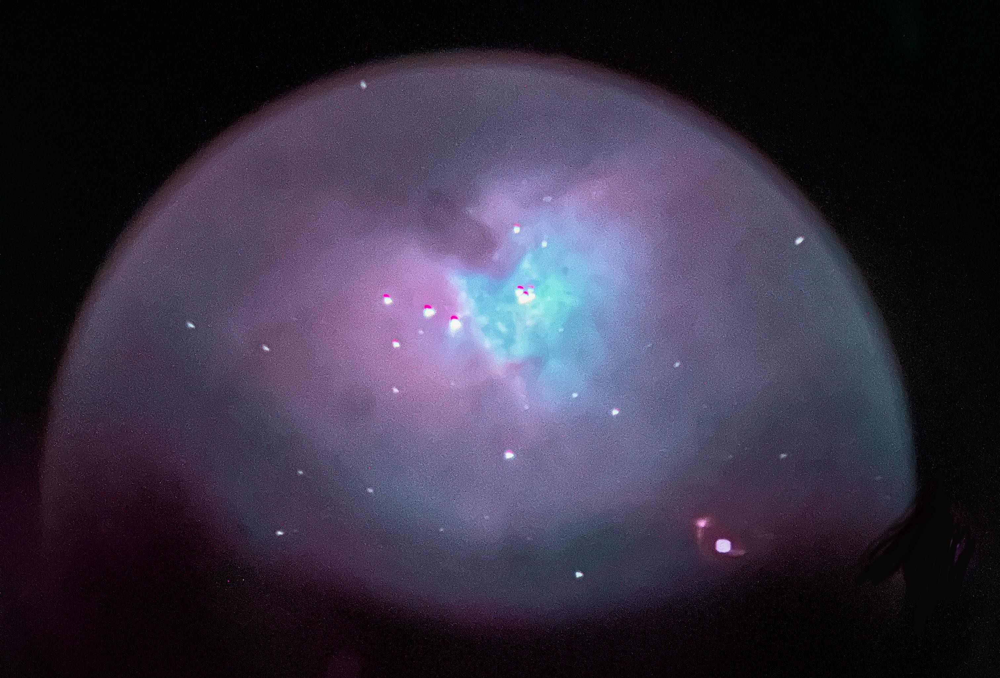
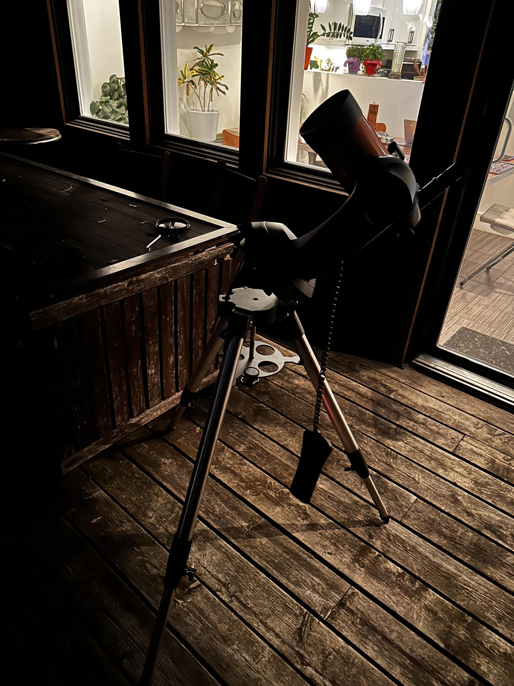
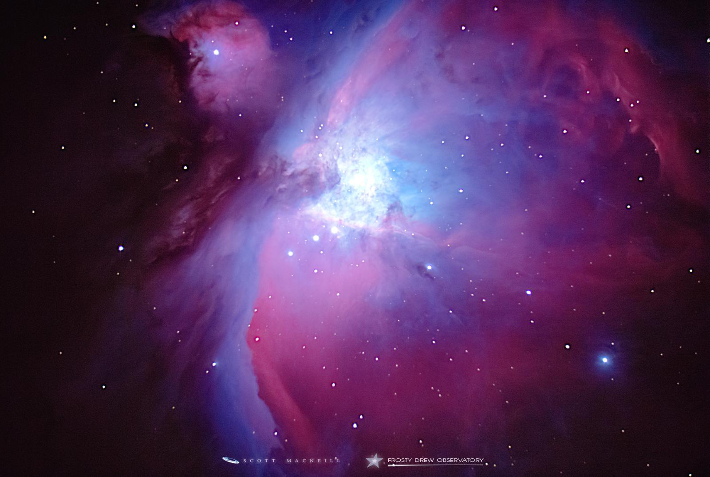
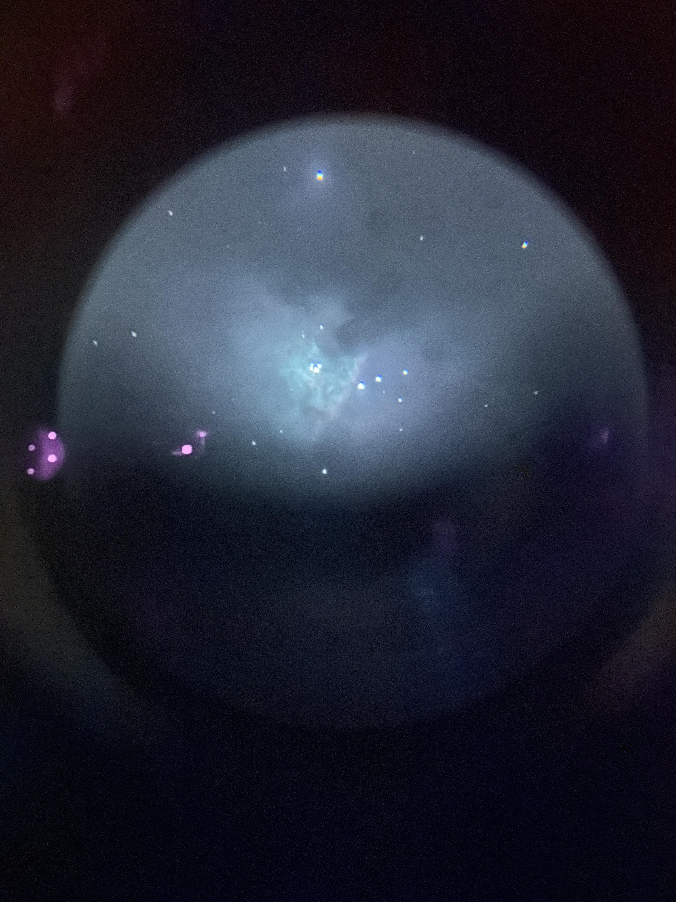
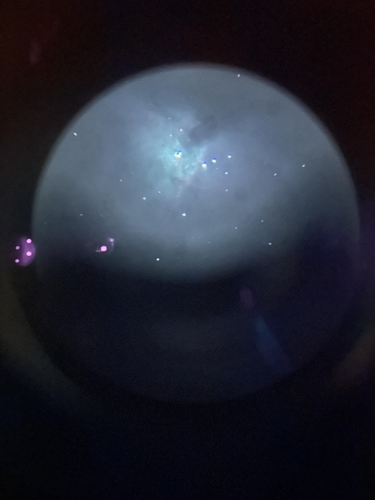
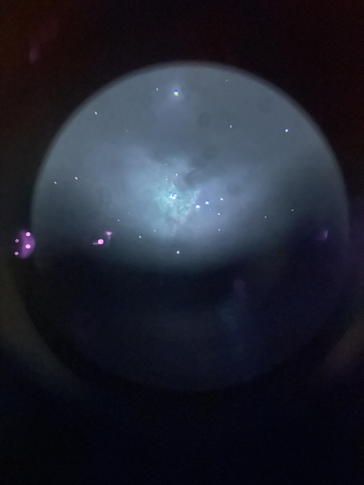
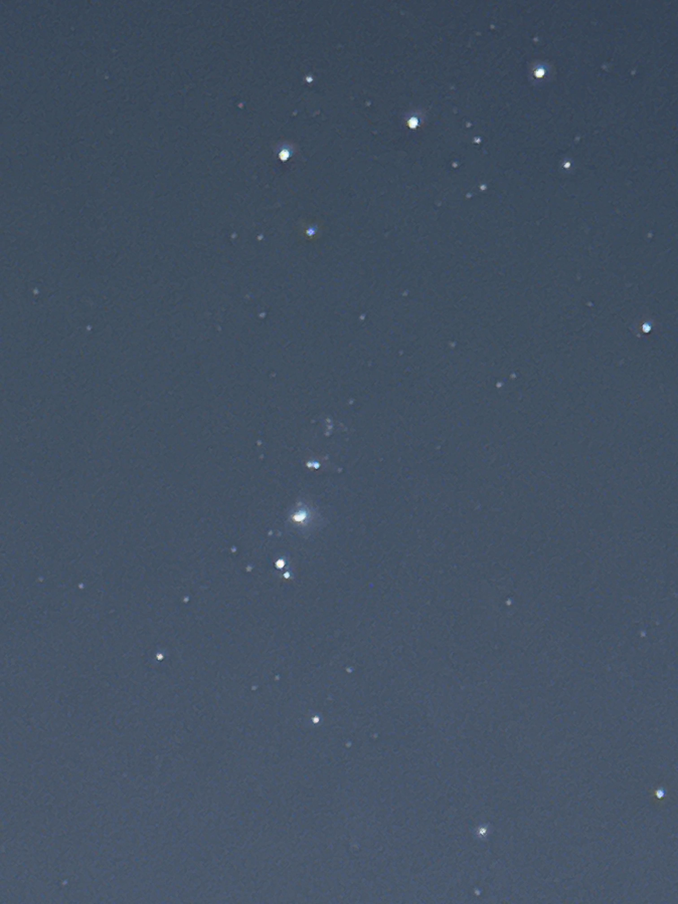

Orion Nebula - March 23, 2025
On March 23, 2025, I set up my telescope to take pictures of the Orion Nebula. I took pictures through the eyepiece with my phone, which isn't the best way so part of the image is a little distorted. The image above was a raw picture I took that I then processed in darktable to make the colours pop out a little more.

My telescope setup for that night

Comparing my picture with a better quality image. Image source: exitpupil.org
I think I had my telescope a little too zoomed in so I only captured the core of the nebula. It was also tricky to properly position the phone camera with the eyepiece and I can only do a max exposure of 30 seconds. I since got a proper camera made for astrophotography so hopefully I can get better pictures in the future!



